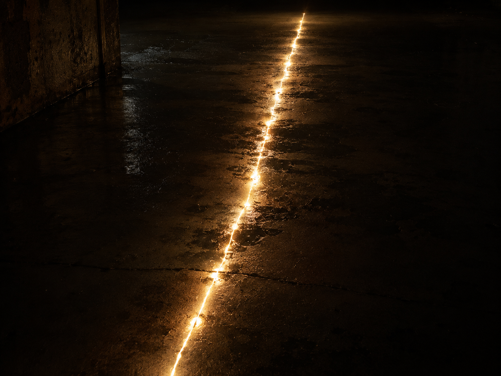

▒▒▒▒▒▒▒▒▒▒▒▒▒▒▒▒▒▒▒▒▒▒▒▒▒▒▒▒▒▒▒▒▒▒ · D E S C E N T · 04 / 40 · ▒▒▒▒▒▒▒▒▒▒▒▒▒▒▒▒▒▒▒▒▒▒▒▒▒▒▒▒▒▒▒▒▒▒

Power and compute, poured without end.
They spent a world to keep it flowing.
What did they burn it all to do?
√16 = _ 2 × 7 = _ 20 ÷ 4 = _ 4 × 4 = _ 23 - 4 = _